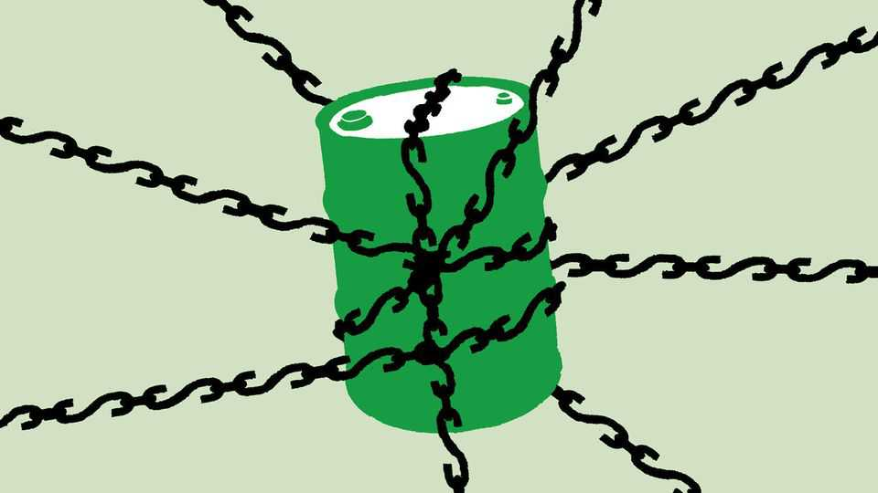

America’s new sanctions are unlikely to topple Iran’s regime
But that may not be the aim

Aug 27th 2026
THE WARNINGS were apocalyptic. An “economic D-Day” was looming for Iran, blustered Donald Trump. It would be “the single greatest financial offensive ever marshalled against an adversary”, declared Scott Bessent, America’s treasury secretary. Having failed to fell the Iranian regime with military might, America was turning to economic weapons.
Yet Operation Economic Outcast, announced on August 24th, looks unlikely to bring about the fall of the regime. Nearly 60 individuals, entities and ships will come under fresh sanctions, as will five sectors of Iran’s economy, from digital assets to shipping. But America has so far only threatened to use its most potent economic weapon: secondary sanctions, on countries that trade with Iran or help its regime move money around. There is good reason to think it may never fire that weapon at full blast.
Mr Bessent himself suggested that doing so might “blow up the global financial system”. He may well be right. The biggest risk comes from China, which despite sanctions buys around 90% of Iranian crude exports, at a discount. Forcing Chinese financial institutions to choose between the dollar and Iranian oil would be a dramatic escalation in America’s confrontation with the world’s second-biggest economy. Investors would worry about the consequences for trade and finance. The prospect of such a fallout curbed the administration last year after China threatened to withhold the supply of rare earths—one reason Mr Trump is seeking warmer relations with China today.

And Iran’s leaders are unlikely to crumble as a result of this half-baked new offensive. Their country has already endured the “maximum pressure” campaign of Mr Trump’s first term and the bombing campaigns of his second. Sanctions and America’s blockade of the Strait of Hormuz are making life miserable for ordinary Iranians. But the regime and its elite defenders in the Islamic Revolutionary Guard Corps (IRGC) will be the last to suffer. Indeed, the IRGC gets its cash from smuggling and making things inside Iran that would otherwise be imported—which is why America’s new campaign may strengthen the regime it is trying to topple.
Perhaps, therefore, what is happening is in fact an American retreat. For all his talk of destroying the Iranian threat, Mr Trump may actually be seeking to take it off the front pages. Just 31% of Americans now back continued military action. Oil prices remain high, but far below their peak; renewed fighting would push them up again. If Operation Economic Outcast causes the Iranian regime to fall (unlikely), he can declare victory. If it achieves nothing (and avoids global economic meltdown), he can at least hope for relative calm in the run-up to the midterm elections in November.
Iran has a say, too. The risk is that its regime proves reluctant to bail Mr Trump out of his disastrous war. Its leaders might renew their attacks, not least because they know how much Mr Trump wants the fighting to be over and see in that an opportunity to assert themselves. Yet they may oblige, since they already feel they have got the better of the war. Iran can keep pressure on America with threats or attacks on shipping, either directly or via proxies, in the Strait of Hormuz and Bab al-Mandab. It will hope this keeps oil above $80 and spurs American voters to punish Mr Trump. Or perhaps talks with Oman will bring an agreement over fees on ships that do go through the strait—requiring America to enforce its embargo.
Either way, the approach of Mr Bessent and his boss comes at a price. America may get some short-term respite from the cycle of attacks and talks that has dominated recent months. But threatening Armageddon only to unleash a damp squib will damage America’s credibility. That could leave it less able to achieve its goals in future.
More important, either outcome leaves another troubling problem. Mr Trump’s approach can at best lead to a sullen stalemate in the Gulf. But Iran’s nuclear programme and its stockpile of fissile material remain. At worst, Iran might seize the opportunity to turn its attention back to its nukes. Whatever Mr Trump does—or does not—achieve with his economic warfare, the path to an all-important negotiated nuclear settlement looks ever more unreachable. ■